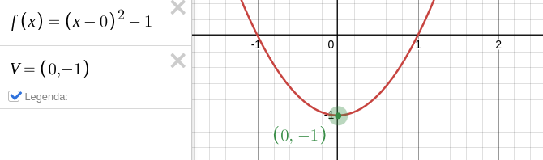
Seção 2 Gráfico de Funções Quadráticas
Subseção 2.1 Função Quadrática do tipo \(y=ax^2\)
O gráfico de uma função quadrática é uma curva chamada Parábola, cuja concavidade é determinada pelo valor do coeficiente a, obtendo um eixo de simetria que passa pelo seu ponto mais alto ou mais baixo, chamado vértice da parábola.
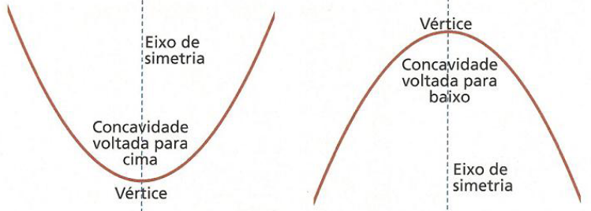
Faremos algumas simulações com um software matemático para tal percepção.
Note que ao mexer no botão deslizante do aplicativo, cuja representação são valores do coeficiente a, notamos que:
- Se o valor de a é positivo, ou seja, \(a>0\text{,}\) então a concavidade fica virada para cima
- Quanto maior o valor de a, mais fechada esta parábola fica. Quanto menor o valor e a, mais aberta ela será.
- Se o valor de a é negativa, ou seja, \(0>a\text{,}\) então a concavidade fica virada para baixo
- Quanto menor o valor e a, mais fechada a parábola fica. Quanto maior o valor de a, mais aberta ela será.
- Se a é nulo, ou seja a=0, temos uma função constante passando por zero.
Veja algumas imagens em que comparamos as funções, analisando o valor de a.
- Quando a é positivo
- Quando a é negativo
Subseção 2.2 Função do tipo \(y=ax^2+k\)
A função quadrática \(y=ax^2\) é uma função que possui apenas um parâmetro multiplicando o termo \(x^2\) e é responsável por mudar a abertura da concavidade da parábola. Vamos inserir mais um parâmetro \(k\) somando o termo \(ax^2\text{.}\) Ou seja, analisaremos um gráfico interativo para a função \(y=ax^2+k\text{.}\)
Note que ao aumentar ou diminuir os valor do parâmetro \(k\) no gráfico interativo, o ponto mais alto ou mais baixo da parábola (vértice da parábola) é deslocada verticalmente no seu eixo de simetria. Para \(k>0\) temos que a parábola passa por valores positivos do eixo de simetria. Para \(k=0\) temos que a parábola passa na origem do sistema cartesiano. E para \(0>k\) temos que a parábola passa por valores negativos do eixo de simetria.
Observe as funções no gráfico a seguir e compara os sinais dos parâmetros \(a\) e \(k\text{.}\)
Portanto, a função do tipo \(y=ax^2+k\) é uma função quadrática cujos parâmetros reais \(a\) e \(k\) são responsáveis por alterar a concavidade da parábola e movê-la verticalmente em eixo de simetria, respectivamente.
Subseção 2.3 Função Quadrática do tipo \(y=a(x-m)^2\)
Quando a função quadrática é do tipo \(f(x)=a(x-m)^2\) um número real m é subtraído do termo x, ao se comparar à função \(f(x)=ax^2\text{.}\) Vamos observar no gráfico interativo o que acontece com a parábola quando mudamos o valor de m.
Este parâmetro \(m\) desloca o eixo de simetria da parábola horizontalmente, no sentido positivo ou negativo do eixo x. Ou seja, se \(m>o\text{,}\) então a parábola está à direita do eixo y. Por outro lado, se \(0>m\text{,}\) então a parábola estará à esquerda do eixo y. E se \(m=0\text{,}\) então a parábola estará com seu eixo de simetria coincidindo com o eixo y. Veja uma imagem ilustrativa.
Note que \(y=2(x-2)^2\) possui a=1 e m=2,fazendo com que o eixo de simetria da parábola esteja coincidindo com a reta x=2.
Analogamente, em \(y=2(x-0)^2\) que também pode ser escrito como \(y=2x^2\text{,}\) possui o eixo de simetria da parábola coincidindo com a reta x=0.
E a função \(y=2(x-(-2))^2\) que também pode ser escrito como \(y=2(x+2)^2\text{,}\) possui o seu eixo de simetria coincidindo com a reta x=-2.
Portanto, o parâmetro m é reponsável por deslocar a parábola horizontalmente.
Subseção 2.4 Função Quarática do tipo \(y=a(x-m)^2+k\)
Relembrando das funções quadráticas anteriores, os parâmetros a e m são responsáveis pelo sentido da concavidade da parábola e pelo seu deslocamento horizontal, respectivamente. Vamos inserir um terceiro parâmetro, um valor real k, responsável pelo deslocamento vertical da parábola. Teste estes valores no gráfico interativo a seguir.
Analisando três casos para o valor de k, ou seja, k=-2, k=0 e k=2, vamos observar graficamente o que acontece com a parábola no plano cartesiano.
Subseção 2.5 Escrevendo a Função Quadrática na Forma Canônica
A função quadrática pode ser escrita de duas formas: a forma padrão, \(f(x)=ax^2+bx+c\) e a a forma canônica \(f(x)=a(x-m)^2+k\text{.}\)
Contudo, podemos fazer algumas manipulações algébricas na forma padrão e escrevê-la de outra maneira. Veja quando colocamos o coeficiente \(a\) em evidência:
\begin{equation*}
f(x)=a\cdot\left[x^2+\dfrac{b}{a}x+\dfrac{c}{a}\right]
\end{equation*}
Completando quadrados teremos:
\begin{equation*}
f(x)=a\cdot\left[\left(x^2+\dfrac{b}{a}x+\dfrac{b^2}{4a^2}-\dfrac{b^2}{4a^2}+\dfrac{c}{a}\right)\right]
\end{equation*}
Reorganizando os termos, temos:
\begin{equation*}
f(x)=a\cdot\left[\left(x^2+\dfrac{b}{a}x+\dfrac{b^2}{4a^2}\right)+\dfrac{c}{a}-\dfrac{b^2}{4a^2}\right]
\end{equation*}
Escrevendo o produto notável quadrado da soma, temos:
\begin{equation*}
f(x)=a\cdot\left[\left(x+\dfrac{b}{2a}\right)^2+\dfrac{c}{a}-\dfrac{b^2}{4a^2}\right]
\end{equation*}
Operacionando os dois últimos termos, temos:
\begin{equation*}
f(x)=a\cdot\left[\left(x+\dfrac{b}{2a}\right)^2+\dfrac{4ac-b^2}{4a^2}\right]
\end{equation*}
Simplificando o coeficiente de fora dos colchetes como o segundo termo dos colchetes, temos:
\begin{equation*}
f(x)=a\cdot\left(x+\dfrac{b}{2a}\right)^2+\dfrac{4ac-b^2}{4a}\text{,}
\end{equation*}
temos a forma canônica da função quadrática.
Comparando as funções escritas acima \(f(x)=a(x-m)^2+k\) e \(f(x)=a\cdot\left(x+\dfrac{b}{2a}\right)^2+\dfrac{4ac-b^2}{4a}\) temos que \(m=-\dfrac{b}{2a}\) e \(k=-\dfrac{\Delta}{4a}\text{.}\)
Estes valores de \(m\) e \(k\) nos ajudam a escrever funções quadráticas sem precisar completar quadrados todas as vezes. Assim, torna mais simples o processo de resolução de exercícios de funções.
Veja alguns exemplos:
-
Escreva as funções a seguir na forma canônica:
- \(f(x)=x^2-4x+3\)
Solução.
Como \(a=1\text{,}\) \(b=-4\) e \(c=3\text{,}\) então\(m=-\dfrac{b}{2a}=-\dfrac{-4}{2\cdot1}=2\) e\(k=-\dfrac{\Delta}{4a}=-\dfrac{(-4)^2-4\cdot1\cdot3}{4\cdot1}=-1\)Portanto, \(f(x)=(x-2)^2-1\text{.}\) - \(f(x)=-x^2+5x-6\)
Solução.
Como \(a=-1\text{,}\) \(b=5\) e \(c=-6\text{,}\) então\(m=-\dfrac{b}{2a}=-\dfrac{5}{2\cdot(-1)}=\dfrac{5}{2}\) e\(k=-\dfrac{\Delta}{4a}=-\dfrac{(5)^2-4\cdot(-1)\cdot(-6)}{4\cdot(-1)}=\dfrac{1}{4}\)Portanto, \(f(x)=-\left(x-\dfrac{5}{2}\right)^2+\dfrac{1}{4}\text{.}\) - \(f(x)=5x^2-25\)
Solução.
Como \(a=5\text{,}\) \(b=0\) e \(c=-25\text{,}\) então\(m=-\dfrac{b}{2a}=-\dfrac{0}{2\cdot(5)}=0\) e\(k=-\dfrac{\Delta}{4a}=-\dfrac{(0)^2-4\cdot(5)\cdot(-25)}{4\cdot(5)}=25\)Portanto, \(f(x)=5(x-0)^2+25\text{.}\) - \(f(x)=\dfrac{x^2}{2}-4x\)
Solução.
Como \(a=\dfrac{1}{2}\text{,}\) \(b=-4\) e \(c=0\text{,}\) então\(m=-\dfrac{b}{2a}=-\dfrac{-4}{2\cdot\dfrac{1}{2}}=4\) e\(k=-\dfrac{\Delta}{4a}=-\dfrac{(-4)^2-4\cdot\left(\dfrac{1}{2}\right)\cdot0}{4\cdot\dfrac{1}{2}}=-8\)Portanto, \(f(x)=\dfrac{1}{2}(x-4)^2-8\text{.}\)
Subseção 2.6 Parábola
A parábola é uma curva desenhada pelo gráfico da função quadrática, indenpendente em qual forma, padrão ou canônica, ela está escrito. Como já sabemos escrever uma função na forma canônica, observaremos se estes dados são de fácil percepção quando usamos um software gráfico para desenhar as parábolas.
Veja no gráfico a seguir a função quadrática \(f(x)=(x-2)^2+3\text{:}\)
Na função \(f(x)=(x-2)^2+3\) temos os valores de \(m=2\) e \(k=3\text{.}\) Note que o vértice da parábola possui os mesmos valores. Ou seja, as coordenadas do ponto mais baixo da parábola, ponto de mínimo, são V=(2,3). Logo, sejam \(x_v\) e \(y_v\) a coordenadas do vértice da parábola, vemos que \(m=x_v=2\) e \(k=y_v=3\text{.}\)
Outros exemplos
Exemplo 2.2.
Exemplo 2.4.
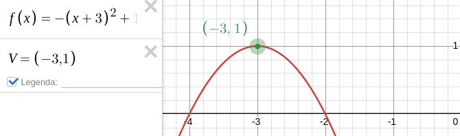
Exemplo 2.6.
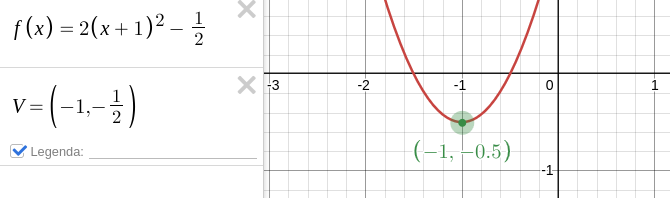
Subseção 2.7 Gŕafico da Função Quadrática
-
Em alguns casos as curvas que passam pelos pontos determinados pela fórmula da função quadrática possuem valores máximos e mínimos. Veja um exemplo na imagem: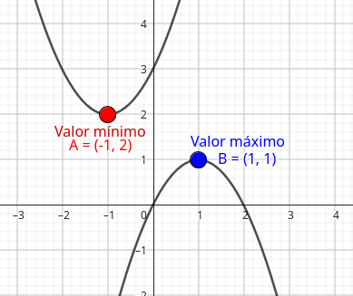
Figura 2.8. Dada duas funções quadráticas cujas fórmulas são \(y_1=x^2-4x+3\) e \(y_ 2=-x^2-4x-3\text{.}\) Investigue qual delas têm valor máximo e valor mínimo.Dica.
Use \(x\in \{-4,-3,-2,-1,0,1,2,3,4\}\)Solução.
Para a função \(y_1=x^2-4x+3\text{,}\) vamos investigar se ela possui valor máximo ou valor mínimo para os valores de x iguais a -4, -3, -2, -1, 0, 1, 2, 3 e 4. Assim:\(x=-4 \Rightarrow y=(-4)^2-4\cdot(-4)+3=16+16+3=35 \therefore\)A=(-4,35)\(x=-3 \Rightarrow y=(-3)^2-4\cdot(-3)+3=9+12+3=24 \therefore\)B=(-3,24)\(x=-2 \Rightarrow y=(-2)^2-4\cdot(-2)+3=4+8+3=15 \therefore\)C=(-2,15)\(x=-1 \Rightarrow y=(-1)^2-4\cdot(-1)+3=1+4+3=8 \therefore\)D=(-1,8)\(x=0 \Rightarrow y=(0)^2-4\cdot(0)+3=0+0+3=3 \therefore\)E=(0,3)\(x=1 \Rightarrow y=(1)^2-4\cdot(1)+3=1-4+3=0 \therefore\)F=(1,0)\(x=2 \Rightarrow y=(2)^2-4\cdot(2)+3=4-8+3=-1 \therefore\)G=(2,-1)\(x=3 \Rightarrow y=(3)^2-4\cdot(3)+3=9-12+3=0 \therefore\)H=(3,0)\(x=4 \Rightarrow y=(4)^2-4\cdot(4)+3=16-16+3=3 \therefore\)I=(4,3)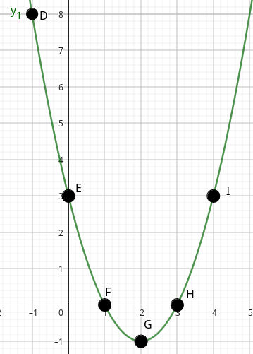Figura 2.9. Observe que temos, em x=2 (ponto G), um valor mínimo para y. Todos os outros são menores.Agora, para a função \(y_2=-x^2-4x-3\text{,}\) vamos investigar se ela possui valor máximo ou valor mínimo para os valores de x iguais a -4, -3, -2, -1, 0, 1, 2, 3 e 4. Assim:\(x=-4 \Rightarrow y=-(-4)^2-4\cdot(-4)-3=-16+16-3=-3 \therefore\)A=(-4,-3)\(x=-3 \Rightarrow y=-(-3)^2-4\cdot(-3)-3=-9+12-3=0 \therefore\)B=(-3,0)\(x=-2 \Rightarrow y=-(-2)^2-4\cdot(-2)-3=-4+8-3=1 \therefore\)C=(-2,1)\(x=-1 \Rightarrow y=-(-1)^2-4\cdot(-1)-3=-1+4-3=0 \therefore\)D=(-1,0)\(x=0 \Rightarrow y=-(0)^2-4\cdot(0)-3=0+0-3=-3 \therefore\)E=(0,-3)\(x=1 \Rightarrow y=-(1)^2-4\cdot(1)-3=-1-4-3=-8 \therefore\)F=(1,-8)\(x=2 \Rightarrow y=-(2)^2-4\cdot(2)-3=-4-8-3=-15 \therefore\)G=(2,-15)\(x=3 \Rightarrow y=-(3)^2-4\cdot(3)-3=-9-12-3=-24 \therefore\)H=(3,-24)\(x=4 \Rightarrow y=-(4)^2-4\cdot(4)-3=-16-16-3=-35 \therefore\)I=(4,-35)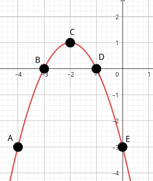Figura 2.10. Observe que temos, em x=-2 (ponto C), um valor máximo para y. Todos os outros são menores. - Pesquise e produza uma situação semelhante ao exercício anterior em que você possa determinar o maior ou o menor valor de uma curva determinada pela fórmula da função quadrática no plano cartesiano.
-
Trace uma linha que passe por todos os pontos no quadro a seguir, apenas usando os botões deslizantes a, b e c.
Solução.
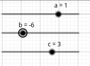Figura 2.11. -
Selecione qual gráfico representa a função quadrática \(f(x)=x^2-1\)
Resposta.
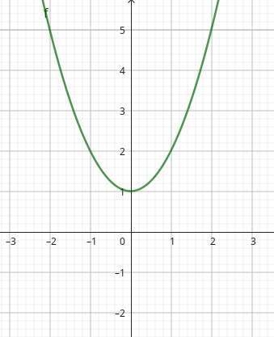Resposta.
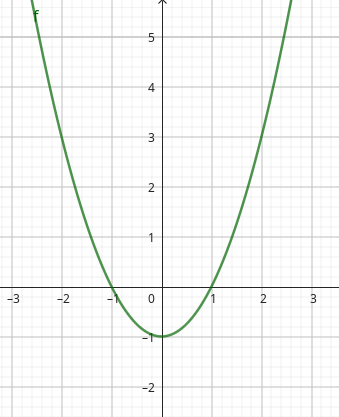Resposta.
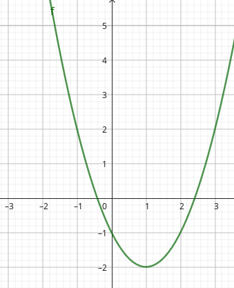Resposta.
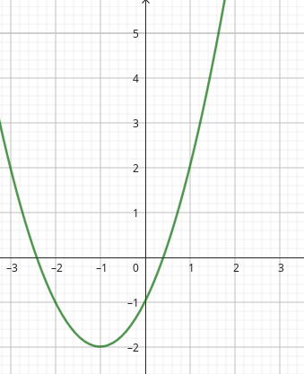
Solução.
Alternativa bFigura 2.12. -
Explique como encontrar a lei de formação da função quadrática do gráfico a seguir.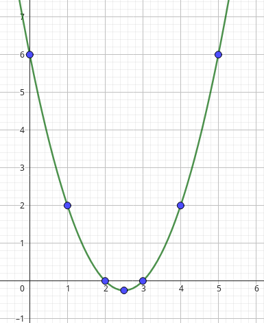
Figura 2.13. - \(\displaystyle f(x)=x^2-3x+6\)
- \(\displaystyle f(x)=x^2+5x+6\)
- \(\displaystyle f(x)=x^2-5x+6\)
- \(\displaystyle f(x)=x^2-x+6\)
Solução.
Alternativa c
Toda Função Quadrática tem como gráfico uma curva chamada Parábola, com a seguintes características:
- Quando a é positivo a concavidade é virada para cima e quando a é negativo, a concavidade é virada para baixo.
- A intersecção da parábola com o eixo x são as raízes da função.
- A intersecção da parábola com o eixo y é o valor do coeficiente c.
- O vértice da parábola é o ponto de máximo, se a concavidade é virada para baixo, e o vértice da parábola é ponto de mínimo, se a concavidade é virada para cima.
Exemplo
Uma função quadrática, cuja lei de formação é \(y=x^2-4x+3\text{,}\) é representada no gráfico a seguir.
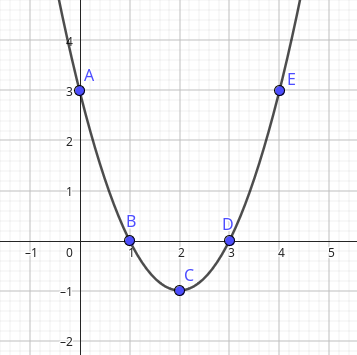
Note que:
- A concavidade é virada para cima pois o coeficiente a é positivo.
- Os pontos B e D são raízes da função
- O ponto C é vértice (ponto de mínimo) da função
- O ponto A é coeficiente linear da função
Veja mais exemplos a seguir.
Exemplo 2.15. y=-x²+5x-6.
- y=-6 é o coeficiente linear da função
- x=2 e x=3 são as raízes da função
- O ponto C=(2,5;0,25) é o vértice da parábola e ponto de máximo da função
- A concavidade da parábola é virada para baixo.
Exemplo 2.17. y=x²-5x+6.
- y=6 é o coeficiente linear da função
- x=2 e x=3 são as raízes da função
- O ponto C=(2,5;-0,25) é o vértice da parábola e ponto de mínimo da função
- A concavidade da parábola é virada para cima.